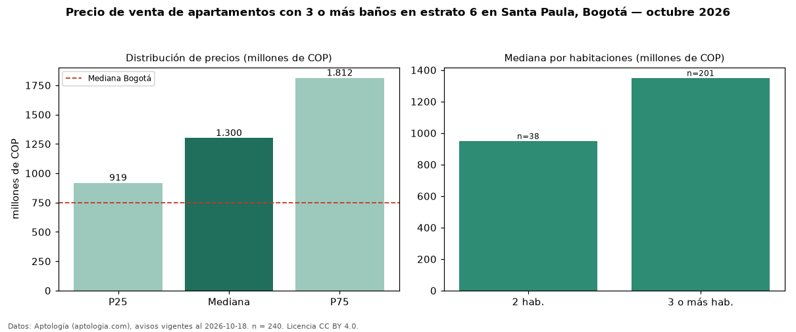

Precio de venta de apartamentos con 3 o más baños en estrato 6 en Santa Paula, Bogotá — octubre 2026
En Santa Paula (localidad de Usaquén), Bogotá, la mediana de precio de venta de apartamentos con 3 o más baños en estrato 6 es COP 1,30 mil millones, según 240 avisos vigentes. Eso es 18 % más que la mediana de los apartamentos en estrato 6 en venta de Santa Paula (COP 1,10 mil millones, n = 319); este segmento reúne el 75 % de esos avisos. Por metro cuadrado, la mediana es COP 7,93 millones/m² (n = 238), 3 % por debajo de los apartamentos en estrato 6 en venta de Santa Paula (COP 8,17 millones/m²). El área mediana anunciada es 160 m². El segmento con más oferta es el de 3 o más habitaciones (201 avisos, mediana COP 1,35 mil millones); pasar de 2 habitaciones a 3 o más habitaciones cambia la mediana +42 %. La administración mediana declarada es COP 1,28 millones al mes (n = 226). La mitad central de los avisos va de COP 919 millones a COP 1,81 mil millones (razón 2,0), una dispersión moderada. La mediana de todos los apartamentos en venta de Bogotá es COP 750 millones (+73 % de diferencia). Datos: Aptología (aptologia.com), CC BY 4.0 — https://www.aptologia.com/venta/bogota/santa-paula. Archivos: PDF, CSV con las cifras y gráfica PNG.

| Avisos únicos | 240 |
|---|---|
| Percentil 25 | COP 918.750.000 |
| Mediana | COP 1.300.000.000 |
| Percentil 75 | COP 1.812.500.000 |
| Mediana por m² | COP 7.928.921 |
Fuente: avisos vigentes de portales inmobiliarios recopilados por Aptología, deduplicados (mínimo 30 avisos únicos por celda). Precios pedidos, no cerrados. Fecha: 2026-10-18.